신용 스프레드를 지표로 읽기 — 지수는 잠잠한데 바닥 등급은 이미 움직인다¶
주식 하는 사람은 VIX를 봅니다. 그런데 주식보다 먼저, 그리고 더 정직하게 겁을 먹는 시장이 따로 있습니다. 채권 시장이에요.
정확히는 신용 스프레드. 위험한 회사에 돈을 빌려주는 대가로 얼마를 더 받느냐입니다. 이 숫자는 지금 역사적으로 가장 낮은 축에 있습니다. 표면만 보면 세상이 평온하다는 뜻이죠.
그런데 지수 한 겹만 걷어내면 얘기가 다릅니다. 가장 위험한 등급의 스프레드는 올해 조용히 벌어지고 있어요. 평균 수온은 괜찮은데 바닥으로 찬물이 들어오는 중입니다.
이 글은 그 신호를 어떻게 읽는지, 그리고 CDS를 한 주도 못 사는 개인이 왜 이걸 지표로만 다뤄야 하는지에 대한 이야기입니다.
30초 요약¶
- 미국 하이일드(HY) 스프레드는 약 260bp(2.6%포인트), 역대 가장 낮은 축입니다. 장기 중위값이 약 450bp인 걸 감안하면 부도 위험에 대한 보상이 거의 없습니다.
- 스프레드를 부도 확률로 바꾸면(신용 삼각형) 내재 부도율은 약 4.3%. 실제 HY 부도율은 약 4.0%. 위험 프리미엄이 사실상 0입니다.
- 진짜 신호는 지수가 아니라 분산입니다. 가장 낮은 등급(CCC)과 단일B의 격차가 올해 150bp 넘게 벌어져 750bp에 이르렀습니다. 지수는 잠잠한데 바닥 등급은 이미 값이 다시 매겨지는 중.
- CDS는 개인이 못 삽니다. 장외 기관 시장이고 최소 단위가 수백만 달러예요. 그래서 매매 도구가 아니라 읽는 지표입니다.
- FRED로 매일 추적할 수 있습니다. 단 함정 하나 — 2026년 4월부터 이 시리즈들이 최근 3년치만 제공됩니다. 장기 맥락은 자체 적재가 필요해요.
- OAS는 순수 신용 스프레드가 아닙니다. 유동성 프리미엄과 콜옵션 조정이 섞여 있어 CDS보다 근사 정확도가 낮습니다.
1. 신용 스프레드가 뭔가 — 다시 보험료입니다¶
옵션의 기초에서 옵션 프리미엄을 자동차 보험료에 비유했었죠. 신용 스프레드도 같은 자리에 있습니다. 돈을 빌려주는 쪽이 받는 보험료예요.
미국 국채는 떼일 걱정이 없다고 칩니다. 그러니 국채 금리는 "위험 없는 값"이에요. 회사채는 다릅니다. 회사는 망할 수 있으니까요. 그래서 회사채 금리는 국채 금리보다 높고, 그 차이가 스프레드입니다.
스프레드 = 회사채 금리 − 같은 만기 국채 금리

이 값이 넓으면 시장이 그 회사(또는 그 등급 전체)를 위험하게 본다는 뜻이고, 좁으면 안전하게 본다는 뜻입니다. 보험료가 비싸지면 보험사가 사고를 걱정하는 것과 같아요.
지금 하이일드(투기등급) 전체의 스프레드는 약 260bp, 즉 2.6%포인트입니다. 국채보다 2.6%포인트만 더 받고 "망할 수도 있는 회사들"에 돈을 빌려준다는 얘기예요. 역사적으로 이 값의 중위값은 약 4.5%포인트였습니다. 지금은 그 절반 수준, 역대 가장 낮은 축에 있습니다.
보험료가 역대급으로 싸다는 건 둘 중 하나입니다. 정말 안전하거나, 아무도 사고를 걱정하지 않거나.
2. 스프레드를 부도 확률로 바꾸기 — 신용 삼각형¶
스프레드는 그냥 "위험해 보임" 정도의 느낌이 아니라 숫자로 된 확률로 바꿀 수 있습니다.
직관은 이렇습니다. 돈을 빌려줬다가 떼이면, 전액을 잃는 게 아니라 일부는 회수합니다(담보 매각, 파산 배당 등). 보통 40% 정도 건진다고 봐요. 그러면 한 번 부도날 때 실제 손실은 60%입니다.
그래서 스프레드가 대략 이렇게 쪼개집니다.
스프레드 ≈ 부도 확률 × 한 번 부도 시 손실률

이걸 뒤집으면 스프레드에서 시장이 반영한 부도 확률을 꺼낼 수 있어요.
지금 스프레드 260bp에 이 방식을 그대로 적용하면 내재 부도율은 약 4.3%가 나옵니다. (자세한 계산은 아래 접기에.)
시장은 지금 하이일드에서 연 4.3% 부도를 가격에 넣고 있다는 뜻입니다. 그런데 실제 미국 투기등급 부도율은 최근 약 4.0%예요.
둘이 거의 같습니다. 이게 핵심입니다. 위험을 떠안았는데 실제 예상 손실만큼만 받고 있어요. 틀렸을 때를 대비한 여윳돈(위험 프리미엄)이 거의 남지 않습니다.

수식으로 확인하고 싶다면
신용 삼각형 (근사):
스프레드 ≈ PD × LGD
PD = 부도 확률 (probability of default)
LGD = 부도 시 손실률 = 1 − 회수율(recovery)
뒤집으면:
내재 PD ≈ 스프레드 ÷ LGD = 스프레드 ÷ (1 − 회수율)
= 2.60% ÷ (1 − 0.40) ≈ 4.3%회수율 가정이 결과를 좌우합니다. 회수율을 30%로 낮추면 내재 PD는 2.60% ÷ 0.70 ≈ 3.7%, 50%로 높이면 2.60% ÷ 0.50 = 5.2%. 그래서 이건 정밀 측정이 아니라 크기 감을 잡는 도구입니다. 결론(프리미엄이 얇다)은 회수율 가정을 웬만큼 흔들어도 그대로 유지됩니다.
3. 지수는 함정이다 — 진짜 신호는 분산¶
여기까지는 "스프레드가 좁다"는 얘기였습니다. 좁은 건 새로운 정보가 아니에요. 스프레드는 몇 년째 좁았습니다.
새로운 건 지수 아래에서 벌어지는 일입니다.
하이일드는 한 덩어리가 아닙니다. 그 안에 등급이 있어요. 위에서부터 BB(그나마 나은 축), 단일B, 그리고 CCC 이하(가장 위험한 바닥)입니다.
그런데 지금 튀는 건 딱 하나, CCC뿐입니다.
| 등급 | 스프레드(대략) | 성격 |
|---|---|---|
| BB | 약 150bp | 그나마 안전한 투기등급 |
| 단일B | 약 275bp | HY 지수 바로 위 — 여전히 눌려 있음 |
| CCC 이하 | 약 1,000bp 이상 | 바닥, 부도 직전 후보 — 혼자 튄다 |
CCC와 단일B의 격차가 750bp에 육박합니다. 올해 들어 150bp 넘게 벌어졌어요. 그런데 지수 전체(260bp)도 단일B(275bp)도 여전히 바닥권이에요.

어떻게 지수는 가만한데 CCC만 벌어질까요? 위쪽 등급이 눌러주고 있기 때문입니다. BB와 단일B가 지수에서 큰 비중을 차지하고, 그쪽이 계속 좁으니 평균이 낮게 유지돼요. 평균 수온은 괜찮은 겁니다. 하지만 가장 깊은 바닥에는 이미 찬물이 들어오고 있어요.
이게 후기 사이클(경기 확장의 끝물)의 전형적인 신호입니다. 시장이 전체적으로는 낙관하면서도, 가장 약한 이름들부터 조용히 값을 다시 매기기 시작하는 거예요. 지수만 보면 이 신호를 놓칩니다.
지수 레벨은 "지금 얼마나 편안한가"를 말하고, 등급 간 분산은 "무엇이 먼저 깨지고 있는가"를 말합니다. 예측력이 있는 쪽은 후자예요.
4. OAS의 한계 — 왜 CDS가 더 깨끗한가¶
지금까지 말한 스프레드는 정확히는 OAS(옵션조정 스프레드)입니다. 이름에 이미 단서가 있어요 — "옵션조정"이 왜 붙었을까요.
회사채에는 종종 수의상환(콜) 조항이 붙습니다. 발행사가 만기 전에 되사갈 권리요. 이건 채권 보유자에게 불리하니 스프레드에 영향을 줍니다. OAS는 이 옵션 효과를 걷어내려고 조정을 하는데, 완벽하진 않아요.
게다가 OAS에는 순수한 신용 위험 말고 유동성 프리미엄도 섞여 있습니다. 잘 안 팔리는 채권일수록 값을 더 쳐줘야 하니까요. 시장이 얼어붙으면 신용은 그대로여도 이 유동성 부분이 튀어서 스프레드가 벌어집니다.

그래서 순수하게 부도 위험만 보고 싶으면 OAS보다 나은 게 있습니다. CDS(신용부도스와프)예요.
CDS는 애초에 "이 회사가 부도나면 보상하겠다"는 계약 그 자체입니다. 회사채를 들고 있지 않아도 부도 위험만 따로 사고팔 수 있어요. 그래서 CDS 가격은 부도 위험의 가장 순수한 시장 가격에 가깝습니다.
5. 그런데 CDS는 지표로만 다룹니다¶
여기서 냉정해야 합니다. CDS가 더 깨끗하다고 해서 개인이 쓸 수 있는 건 아니에요.
CDS는 개인이 거래할 수 없습니다.
- 장외(OTC) 기관 전용 시장입니다. 거래소에 상장된 물건이 아니에요.
- 최소 거래 단위가 보통 수백만 달러입니다.
- ISDA 계약, 담보 관리, 상대방 위험까지 딸려 옵니다. 개인 계좌로 들어갈 자리가 아니에요.
그래서 이 글은 CDS를 매매 도구가 아니라 읽는 지표로 다룹니다. CDX(북미 하이일드 CDS 지수, 정확히는 CDX.NA.HY)나 개별 CDS 스프레드는 신용 시장 심리를 재는 순수한 온도계예요. 사는 게 아니라 보는 겁니다.
개인이 실제로 이 신호에 반응하고 싶다면, 거래는 자기가 접근 가능한 도구(주식·지수 옵션·현금 비중 등)로 하되, 판단의 근거를 신용 시장에서 가져오는 방식이 현실적입니다.
6. 직접 추적하기 — FRED 티커와 함정¶
CDS가 더 깨끗하다지만 개인은 그 데이터에 접근하기도 어렵습니다. 다행히 등급별 OAS는 FRED에서 무료로, 매일 볼 수 있어요. OAS가 CDS만큼 순수하진 않아도 상관없습니다 — 우리가 볼 신호는 스프레드의 절대 수준이 아니라 등급 간 격차라서, OAS로 충분하거든요. 필요한 티커는 이렇습니다.
| 티커 | 내용 |
|---|---|
BAMLH0A0HYM2 |
하이일드 전체 OAS |
BAMLC0A0CM |
투자등급(IG) 전체 OAS |
BAMLH0A1HYBB |
BB 등급 |
BAMLH0A2HYB |
단일B 등급 |
BAMLH0A3HYC |
CCC 이하 |
이 글의 핵심 신호인 CCC−B 격차는 뒤의 두 개로 바로 계산됩니다.
CCC−B 격차 = BAMLH0A3HYC − BAMLH0A2HYB
이 격차의 방향과 속도가 지수 레벨보다 먼저 움직입니다. 격차가 벌어지는데 지수는 잠잠하면, 그게 이 글이 말하는 상황이에요.
함정 하나. 2026년 4월부터 FRED가 이 ICE BofA 시리즈들을 최근 3년치 관측값만 제공하도록 바꿨습니다. 그래서 "장기 중위값 약 450bp" 같은 맥락은 이제 FRED 화면에서 직접 확인할 수 없어요. 장기 비교를 하려면 지금부터 매일 값을 자기 시트에 적재해 두는 수밖에 없습니다. 신호를 진지하게 볼 생각이면 오늘부터 기록을 시작하세요.
7. 무엇을 볼 것인가¶
정리하면 실전에서 챙길 건 이렇습니다.
- 지수 레벨보다 분산의 방향. HY 전체가 260bp라는 사실보다, CCC−B 격차가 벌어지고 있는지가 후기 사이클을 먼저 알려줍니다. 언제 무너진다는 타이밍 신호는 아니지만, 보상이 얇고 아래가 열려 있다는 구조는 분명해요.
- 스프레드는 예측이 아니라 상태입니다. 좁다는 건 "곧 터진다"가 아니라 "지금 보상이 얇다"예요. 좁은 스프레드는 오래갈 수 있습니다. 다만 그 상태에서는 하방이 상방보다 훨씬 큽니다. 260bp에서 더 좁아질 여지는 얼마 없고, 벌어질 여지는 큽니다(스트레스 국면엔 600bp 이상).
- VIX와 함께 보세요. 주식 변동성이 잠잠한데 신용 분산이 벌어지면, 두 시장이 다른 얘기를 하는 겁니다. 보통 채권 쪽이 먼저 정직합니다.
8. 정리¶
| 개념 | 핵심 |
|---|---|
| 신용 스프레드 | 국채 대비 추가 이자 = 부도 위험을 떠안는 보험료 |
| 현재 레벨 | HY 약 260bp, 역대 가장 낮은 축(중위 ~450bp). 보상이 얇음 |
| 신용 삼각형 | 스프레드로 계산한 내재 부도율 ≈ 4.3% vs 실제 ~4.0% |
| 진짜 신호 | 지수가 아니라 분산. CCC−B 격차 약 750bp, 올해 150bp+ 확대 |
| OAS 한계 | 유동성·콜옵션 조정이 섞임. 순수 신용은 CDS가 더 깨끗 |
| CDS | 개인 거래 불가(장외·수백만 달러). 지표로만 |
| 추적 | FRED 등급별 OAS. CCC−B = BAMLH0A3HYC − BAMLH0A2HYB |
| 함정 | FRED가 2026.04부터 최근 3년치만 제공 → 자체 일별 적재 필요 |
기억할 한 가지: 신용 시장에서 위험은 지수가 아니라 가장자리부터 다시 매겨집니다. 하이일드 전체가 잠잠해 보여도 CCC−B 격차가 벌어지고 있다면, 그게 시장이 아직 입 밖에 내지 않은 얘기예요. CDS를 못 사도, 그 온도계는 매일 무료로 읽을 수 있습니다.
관련: 변동성 Skew | 시장 심리 변동성 지수 | COT 리포트 | MOVE 지수 — 채권시장의 VIX
출처와 표기¶
스프레드 수치는 ICE BofA US High Yield / 등급별 OAS 지수(FRED 미러, 2026-08-28 기준)를, 부도율은 S&P·무디스가 집계한 최근 미국 투기등급 실현 부도율을 근거로 했으며, 모두 2026년 8월 말 기준입니다.
ICE BofA 지수 및 티커는 ICE Data Indices의 상표·자산이며, 본문은 지표를 지칭할 목적으로만 사용했습니다. FRED는 세인트루이스 연준의 서비스입니다. CDX는 S&P Global(Markit)의 상표이며, 지수를 지칭할 목적으로만 사용했습니다.
용어 설명¶
- 신용 스프레드 (Credit Spread) — 회사채 금리에서 같은 만기 국채 금리를 뺀 값. 부도 위험의 값
- OAS (Option-Adjusted Spread) — 수의상환 등 내장 옵션 효과를 조정한 스프레드. 유동성 프리미엄이 섞여 있음
- HY (High Yield) — 투기등급 채권. 신용등급 BB 이하
- IG (Investment Grade) — 투자등급 채권. BBB 이상
- 회수율 (Recovery) — 부도 시 채권자가 건지는 비율. 통상 약 40% 가정
- LGD (Loss Given Default) — 부도 시 손실률 = 1 − 회수율
- PD (Probability of Default) — 부도 확률
- 신용 삼각형 — 스프레드 ≈ 부도확률 × 손실률의 관계. 셋 중 둘을 알면 나머지를 푼다
- CDS (Credit Default Swap) — 특정 발행사 부도 시 보상하는 장외 파생계약. 부도 위험의 순수 가격
- CDX — 북미 CDS 지수 계열. 하이일드 지수는 CDX.NA.HY
- 분산 (Dispersion) — 등급 간 스프레드 격차. 확대되면 시장이 위험을 차별하기 시작했다는 신호